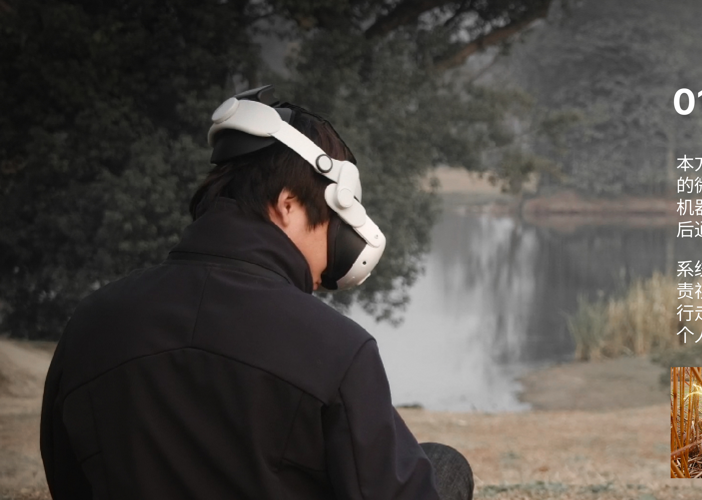
让游客在现代行走的路径，
自然映射为古代生活的一日行程。
本方案以蔚蓝阿尔法机器狗与 AR 眼镜为核心载体，构建一套基于良渚遗址公园的微叙事线索系统。游客在园区内自由游览，机器狗搭载 AR 眼镜持续跟随；在特定点位，机器狗提醒游客拿起 AR 眼镜收集文化线索，游览结束后，依据个性化路线与收集到的线索，生成专属的"古良渚一日"文化叙事路线。
系统强调文化信息的多源性与开放性：机器狗负责发现空间与搜集线索，AR 负责视觉、听觉等多模态呈现，两者协作形成动态的导览方式——让现代行走的路径，自然映射为古代生活的一日行程，使沉浸体验建立在真实空间感与个人化理解之上。
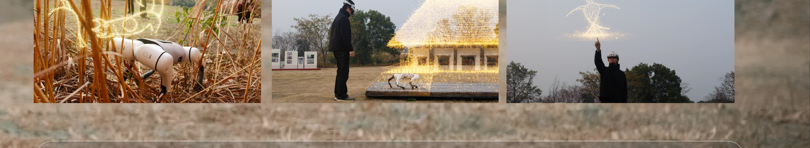
不是工具与使用者，而是同行者。机器狗在物理、感知、叙事三个层面与游客协作，把一次普通的园区行走，逐步转译成一段可被记住、可被生成的文化叙事。
游客自由游览 · 设备无感负重 · 机器狗保持安全距离
机器狗感知文化线索 · 用户主动收集 · 虚实结合
交互行为映射 · 动态生成叙事 · 构建情感联结
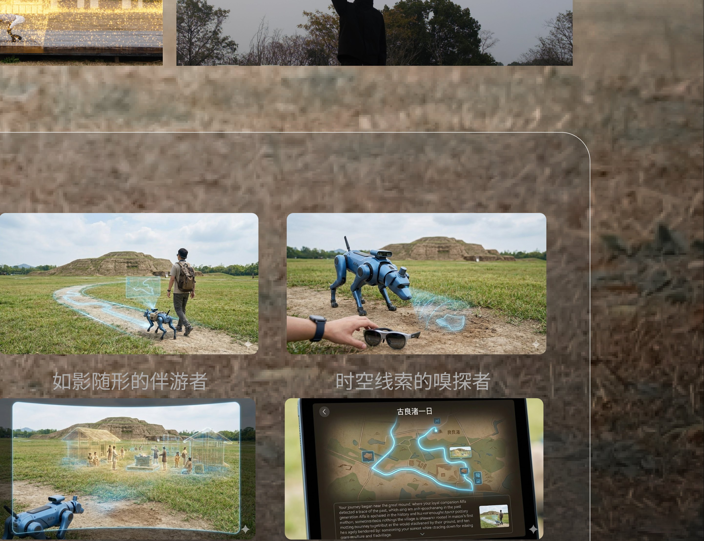
把良渚的文化原型拆解为可被系统调用的"碎片"，再用空间、行为与场景把它们重新组织起来。
基于声音、纹样、光影、器物等原型，构建文化碎片库——水域的纹理光影、玉琮的几何母题、稻作文明的声景，沉淀为"文化碎片语义库"，为后续生成式叙事提供数据基础。
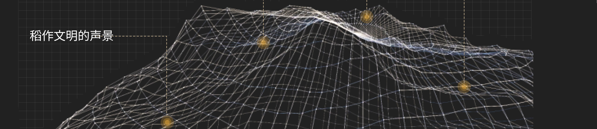
对园区中的休憩、亲子、休闲、商品、运动五类空间行为进行观察，作为触发机制与叙事节奏设计的依据。
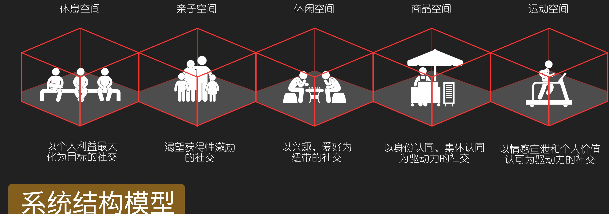
A 机器狗模块（环境识别·位置触发·短时提示）/ B AR 内容触发（点位生成声·影·纹，背部 tag 定位）/ C 文化碎片数据库（纹样·声景·光影·符号体系）/ D AI 叙事生成（碎片组合成"古良渚的一天"）。
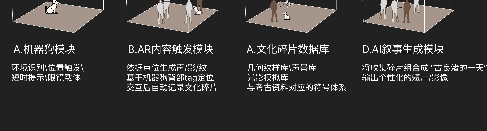
将整个园区理解为一座沉浸式生成叙事的舞台，机器狗扮演"文化线索感应器"。每一类触发区释放对应的文化碎片——"声"（声音线索·农业节律·生命循环）、"影"（光影·水纹·涟漪影线）、"纹"（几何图形·礼制轴线·方位感）。稻田、水岸、苔地各自触发不同的碎片类型。
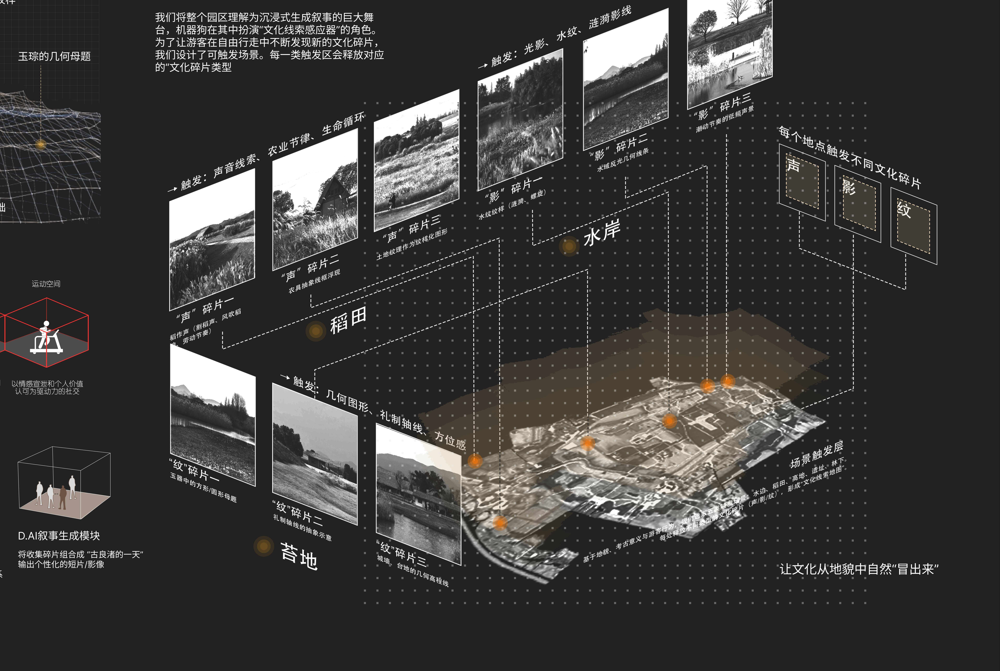
三种体验模式、十余处地标、可生成的个性化游玩故事——把"逛公园"重新设计成一场可记录、可分享的考古叙事。
考古模式——收集考古物料，重交互。
合作探险——解锁剧情，重文化。
合作探险——简单交互收集地点，重记录。
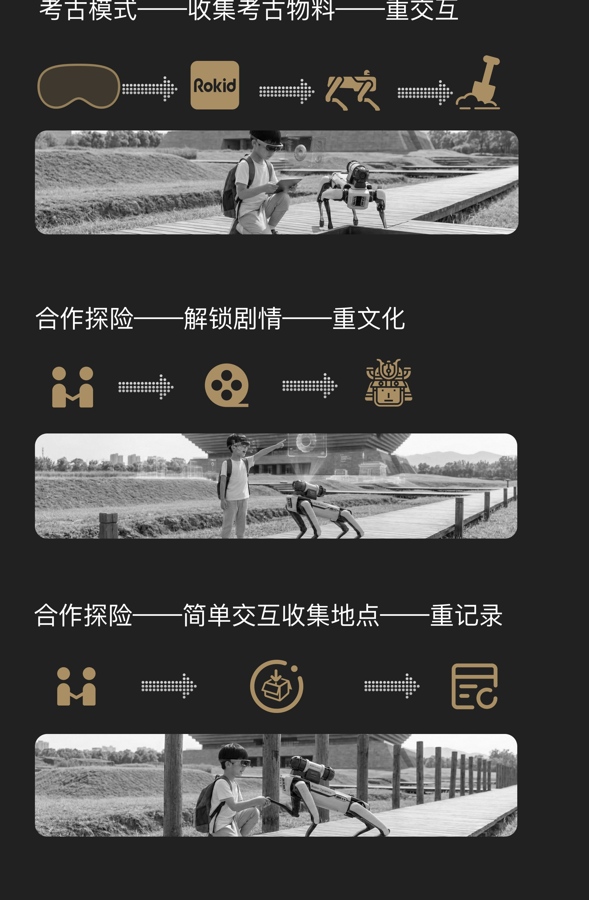
河边、高台、草地、林地、服务点……区域内布置不同的细分场景，配以不同剧情，为每位玩家生成各自的个性化游玩故事。
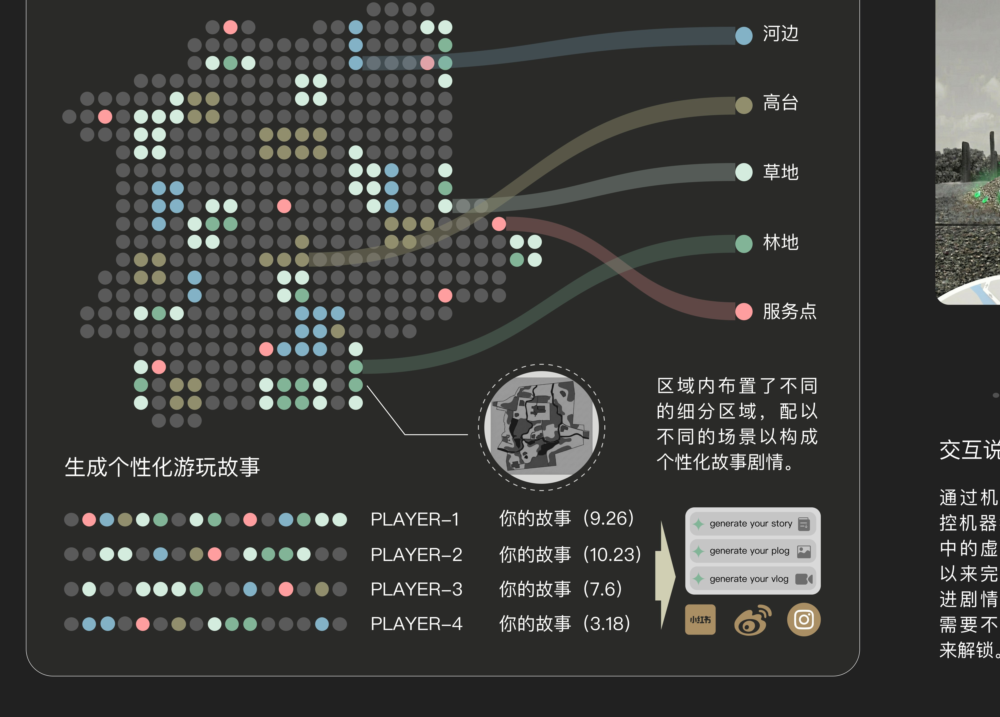
通过机器狗手柄操控机器狗与 AR 眼镜中的虚拟物体交互，完成动作以推进剧情；不同场景需要不同动作触发解锁。① 界面初始化，手柄控制机器狗 · ② 摇杆操控特定位置 · ③ 按键控制特定姿态。
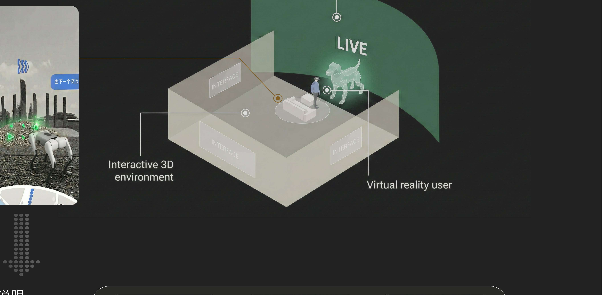
游客入园 → 开始体验 → 经过体验场景 → 触发玩法 → 系统依据解锁地点用 AI 生成个性化游玩日志 → 上传至社交媒体。一条从"行走"到"叙事"再到"分享"的完整链路。
从手柄绑定、收集品挂载到打包测试——一份真实的开发日志，记录把概念落到 Meta Quest 3 上的全过程。
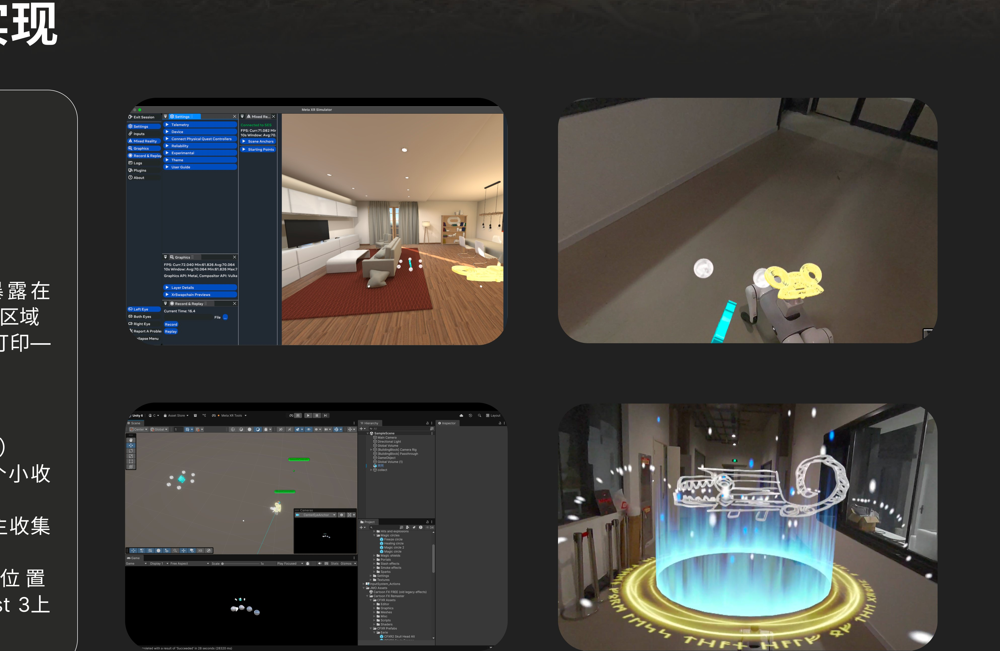
两条主线咬合成闭环：拾取文化线索（自由游览 → 机器狗发现 → 佩戴 AR → 获取线索）与 文化叙事重构（记录路径 → 路径转译 → 故事生成 → 个性化文化记忆）。游客、机器狗、AR 三方协作——主动跟随与情感联结、视觉呈现与个性化解读、位置信息与虚拟叠加。
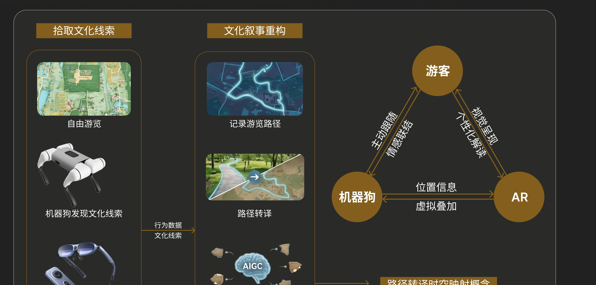
让文化，从地貌中自然"冒出来"。
不是把历史搬进屏幕，而是让游客在真实的行走里，与机器狗、与 AR、与这片土地一起，把"古良渚的一天"重新走一遍、生成一遍、分享出去。